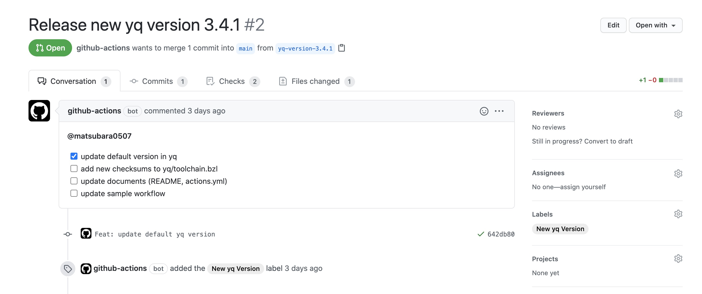

外部ツールのバージョンアップを GitHub Actions で検知する
GitHub Actions のアクションや Bazel ルールを書いたりすると，外部のアプリケーションのアップデートを検知したいときがしばしばあります． いろいろ試行錯誤した結果，GitHub Actions を使って実現することにしたので，本記事はそのメモ書きです．
ちなみに，本記事は「GitHub Actions Advent Calendar 2020」の14日目の記事です．
GitHub Actions を設定する
実際に導入した PR がこちら：
yq と言うツールのリリースを検知しようとしている． ちなみに，最新のバージョンは中の処理のデフォルト値として利用している．
デフォルト値を取り出す
まずは，現在のデフォルトのバージョンを参照しやすいように別ファイル（yq/default.bzl）にしておく：
YQ_DEFAULT_VERSION = "3.4.1"これを sed でいい感じに取り出して GitHub Actions の output に入れていく：
jobs:
build:
name: Build new version commit
runs-on: ubuntu-latest
env:
DEFAULT_FILE_PATH: yq/default.bzl
steps:
...
- name: Set default version
id: default
run: echo "::set-output name=version::$(sed -e s/YQ_DEFAULT_VERSION\ =\ //g $DEFAULT_FILE_PATH | sed -e s/\"//g)"::set-output というのは GitHub Actions の記法で， step 毎の結果を同じ job 間で共有するために使う．以降の step で steps.default.outputs.version という形で sed の結果を参照できるようになる．
最新のリリースバージョンを取り出す
最新のリリースは GitHub のリリースから API を使って取得する． API のレスポンスからバージョンの情報を jq でいい感じに取り出して，また output に入れておく：
jobs:
build:
name: Build new version commit
runs-on: ubuntu-latest
env:
DEFAULT_FILE_PATH: yq/default.bzl
LATEST_LINK: https://api.github.com/repos/mikefarah/yq/releases/latest
steps:
...
- name: Set latest version
id: latest
run: echo "::set-output name=version::$(curl -s $LATEST_LINK | jq .tag_name | sed -e s/\"//g)"以降の step で steps.latest.outputs.version という形で jq の結果を参照できるようになる．
デフォルト値を更新する
これら2つのバージョンが異なるときにだけデフォルト値を更新するようにする：
jobs:
build:
name: Build new version commit
runs-on: ubuntu-latest
env:
DEFAULT_FILE_PATH: yq/default.bzl
LATEST_LINK: https://api.github.com/repos/mikefarah/yq/releases/latest
steps:
...
- name: Update new version default.bzl
if: ${{ steps.latest.outputs.version != steps.default.outputs.version }}
env:
NEW_VERSION: ${{ steps.latest.outputs.version }}
run: echo "YQ_DEFAULT_VERSION = \"$NEW_VERSION\"" > $DEFAULT_FILE_PATH ただ切り出しておいたファイルを上書きしているだけ．
PRを作成する
peter-evans/create-pull-request という GitHub Actions を利用する：
jobs:
build:
name: Build new version commit
runs-on: ubuntu-latest
env:
DEFAULT_FILE_PATH: yq/default.bzl
LATEST_LINK: https://api.github.com/repos/mikefarah/yq/releases/latest
steps:
...
- name: Create Pull Request
if: ${{ steps.latest.outputs.version != steps.default.outputs.version }}
uses: peter-evans/create-pull-request@v3.5.1
with:
token: ${{ secrets.GITHUB_TOKEN }}
commit-message: 'Feat: update default yq version'
title: Release new yq version ${{ steps.latest.outputs.version }}
body: |
@matsubara0507
- [x] update default version in yq
- [ ] add new checksums to yq/toolchain.bzl
- [ ] update documents (README, actions.yml)
- [ ] update sample workflow
labels: New yq Version
branch: yq-version-${{ steps.latest.outputs.version }}
base: main # 最近作ったリポジトリなので main がデフォルトブランチ
draft: true # ドラフトPRにしてくれるbody のところに自分の GitHub アカウントをメンションしておくと，GitHub のスマホアプリとかで通知されて気付きやすい． こんな感じの PR が出来上がる：

ちなみに，すでにブランチがある場合は PR が作成されない． また，PR を放置しているうちに新しいバージョンがリリースされた場合は，新しい PR がもう一個でき上がる．
おしまい
結構便利です．